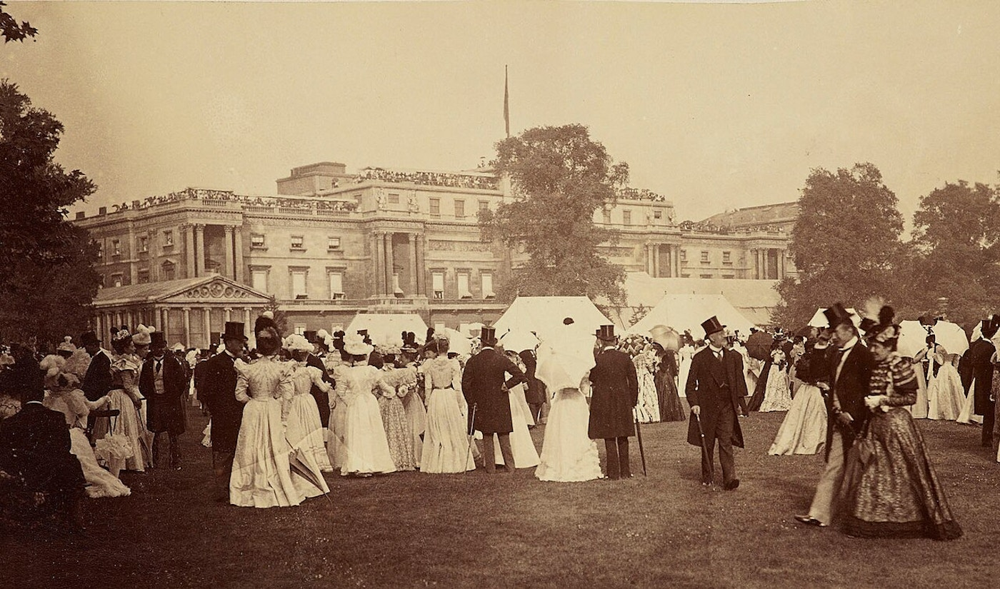
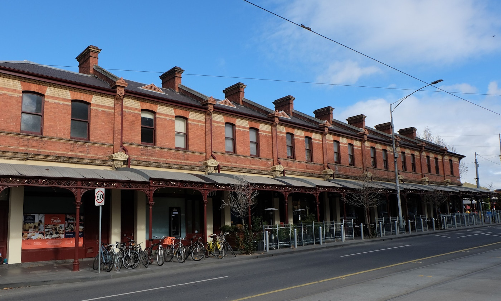

More than four million homes were built in the UK during the Victorian era.
Victorian homes were constructed long before the complex computer models used today to design buildings were invented. Yet, these homes, built over 100 years ago, are cooler in summer than many built more recently.
Here are some fundamental architectural reasons why this is.
1. Shutters
Many Victorian homes featured external wooden shutters to block the sun’s heat before it entered the building. The Victorians knew that blocking the sun’s heat before it enters the building is among the best ways to reduce overheating. Few homes built in the 20th century in the UK have external shutters on windows, partly because modern homes use outward-opening hinged casement windows which cannot be used with external shutters.
Homes in southern and central Europe have tended to keep their external shutters, because they have historically faced hotter summers than the UK. With a changing climate, parts of the UK are expected to have a climate similar to the Mediterranean by the middle of this century.
Victorian homes were also equipped with internal shutters. These are less effective than external ones at reducing overheating because the sun’s heat has already passed into the building. Yet, they are still more effective than a completely unshaded window, particularly if the shutters are painted a light colour which reflects some of the heat back out.
Their main benefit, however, is keeping the heat in during winter. Many Victorian internal shutters survive today as they are less likely to have been damaged due to weather exposure or have been removed when sliding sash windows were replaced with other alternatives.
2. Canopies and awnings
Conjure up an image of a Victorian high street, and no doubt a row of striped canopies and awnings above the shops and cafes will come to mind. These have a similar effect to external shutters by blocking the sun’s heat before it enters the building.
Canopies and awnings have several other benefits: they can be used alongside outward opening windows, so they don’t block ventilation; they allow a view out of the building; and they provide a pleasant shady place to sit.
Although rarely seen today, many Victorian buildings featured them. Even Buckingham Palace once had external canopies protecting the windows from the heat of the sun.
Although it’s not entirely clear why canopies were removed, there may be fewer barriers to their return than we think. The Royal Borough of Kensington and Chelsea in London has spotted that many of the awning boxes, which stored the rolled up awning or retracted canopy, survive today as they are integrated into the building’s facade. With increasing pressure to keep our homes cool in summer, these could easily, and relatively cheaply, be brought back into use.

3. Sash windows
Ventilation can bring in cooler outdoor air (usually at night) and reduce overheating. The Victorians used sliding sash windows which could be operated even with the external shutters closed.
Sash windows are particularly effective because they have a separate operable upper and lower portion which allows for hot air to leave the home at the top and cooler air to enter at the bottom. With hinging casement windows on modern homes the air coming in is often blocked by the air going out, so they don’t keep homes as cool.
4. Leaky by design
It is not just sash windows that makes Victorian homes better ventilated. With open fires burning in winter, the Victorians designed their homes to bring in lots of outdoor air for combustion and several open chimneys to carry the smoke away.
These types of homes, with open chimneys, suspended timber floors, and uninsulated solid brick walls, are the leakiest and least airtight homes in the British housing stock.
This allows more air to enter the building, even when windows are closed, which can cool the home in summer if it is cooler outside than inside. The suspended timber floors also store cool air under the building during the day to provide a cooling effect.
Modern homes do not have these features – there is no need for open chimneys when central heating is used. To help reduce winter energy bills, suspended timber floors have been replaced by insulated slab-on-grade or beam-and-block, and modern building regulations are requiring more airtight homes to reduce heat loss in the colder months.

5. Solid brick
Walk into an ancient church on a hot day and you may mistakenly think they’ve installed air-conditioning. The real reason for the instant cool feeling is in the huge amounts of thermal mass – the ability of the building to store heat within the building fabric.
There has been a fundamental shift in the way houses are constructed in the UK. Victorian homes had solid brick or stone external and internal partition walls – so high thermal mass.
These walls were able to soak up and store the heat of the day to keep the indoor temperature cool.
Modern homes are constructed of lightweight timber frame and plasterboard (lower thermal mass) because they are cheaper and quicker to build. These walls are less able to absorb heat during the day, but they do have the benefit of cooling down faster at night.
What goes wrong?
So why are some Victorian properties not particularly cool during summer heatwaves today? Often the way they have been adapted introduced an overheating problem. When wooden sash windows reach the end of their life, they are often replaced with cheaper outward-opening casement windows. This prevents them from being used with external shutters or ventilating as efficiently.
External shading itself is also being discouraged in some conservation areas, despite it featuring on heritage buildings in the past.
Conversion of Victorian single homes into multiple flats can further cause problems as the once free cross-ventilation may now be blocked and those in converted loft spaces are exposed to high internal roof surface temperatures.
Victorian building design has lessons for today. If sash windows are removed, inward opening windows can be combined with external shutters or blinds instead. Victorian-style awnings and canopies are compatible with outward opening windows, so these could help too.
Most homes standing today will still be around in decades to come, so they must be planned or adapted to cope with whatever the future climate has to throw at them.
By Ben Roberts, Senior Lecturer in School of Architecture, Building and Civil Engineering, Loughborough University
This article is republished from The Conversation under a Creative Commons license. Read the original article.